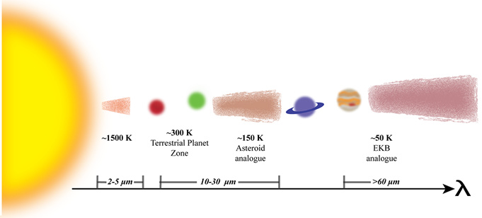
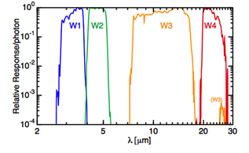

What's A Debris Disk?

Planets around other stars (exoplanets) is an established fact. There are many methods that are used to find them. We can either detect the planet from either its shadow (transit method), the way it moves its host star (RV & astrometry), by acting like a lens (microlensing) or by "just" taking a photo of the planet (direct imaging). However, planets aren't the only things around stars. Stars usually have dust orbiting them -- dust created when asteroids, comets and even smaller planets collide. They collide cause larger objects (LIKE PLANETS) move this smaller stuff around and make 'em smash into each other. You know -- cause large things have a lot more gravitational pull. So basically, the dust -- which forms into disks around their stars (like the pic on the right) --- is kind of like a signpost telling us where we might find planets. Studying these systems can give us a clue as to what's going on and even how the planets are evolving. Why is this cool? Cause our own solar system has a debris disk that's made of the asteroid belt and Edgeworth-Kuiper belt. Check out my blog post here for more background on debris disks.
The Wide-Fiend Infrared Survey Explorer (WISE)
WISE is a space based telescope, smaller than Hubble, but so powerful. It imaged the entire sky starting in 2009, finishing up in 2012, and it continues to be used to search for nearby asteroids. WISE looked at the entire sky in two near-infrared bands and two mid-infrared bands. With the entire sky at our disposal (the data for which is publically available, we can look for a lot of undiscovered dusty stars that might harbor previously unknown planetary systems.
Finding Disks with WISE
Dust in these debris disks get heated up by the star it orbits. The small grains then emit light at infrared wavelengths. The amount of IR light gets added to what the star's light at these wavelengths. Since we usually know how much light the star emits, the rest is then attributed to the dust. Depending at what wavelength we detect the IR light can tell us roughly where the dust is around the star: Shorter wavelengths means the dust is closer and hotter to the star, while longer wavelengths means the dust is colder and further away from its star.  The mid-IR wavelengths in WISE are ideally placed to look for warm dust around a star that's associated with terrestrial planet formation and the asteroid belt in our solar system. We use all four bands in WISE, along with > 16000 stars from Hipparcos to determine precisely how much light these stars emit in the IR, and thereby allowing us to find systems with dust.